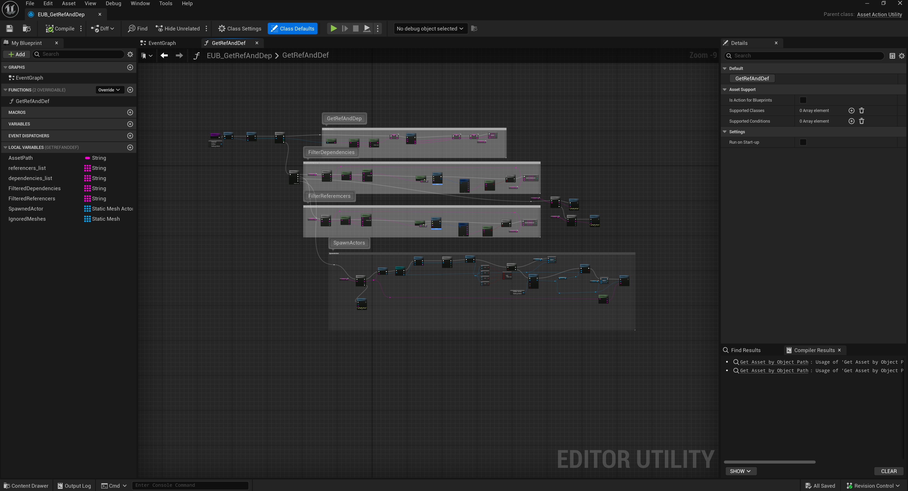

Case studies
Technical art projects and production articles.
A recruiter-friendly index of selected work: leadership, tools, procedural systems, realtime VFX, shader/material libraries, and PCG research prototypes. Each page explains the challenge, system design, implementation notes, and production proof.
 01
01Material reparenting and dependency tooling
Batch material cleanup and parent standardization across 47,000+ Unreal materials and instances.
Open case study 02
02Voronoi world generation prototype
A shader-to-PCG experiment for splitting a procedural world into controllable regions, masks, biomes, and spawn areas.
Open case study 03
03Boat splash and wake system
Mesh- and ocean-surface-driven splash placement for scalable bow, side, stern, foam, and wake behavior.
Open case study 04
04Sensor-based weather system
A localized weather system that reduced wasted particles around multi-sensor scene-capture workflows.
Open case study.png) 05
05Density-based lightning system
Lightning VFX controlled by replicated volumetric-cloud density and weather-condition context.
Open case study
06Referencer and dependency utility
Recursive dependency and referencer mapping for safer Unreal editor automation and cleanup workflows.
Open case study 07Material billboard in Unreal material graph
Camera-facing billboard logic rebuilt in WPO for large instance-friendly sprite and emissive-light sets.
Open case study